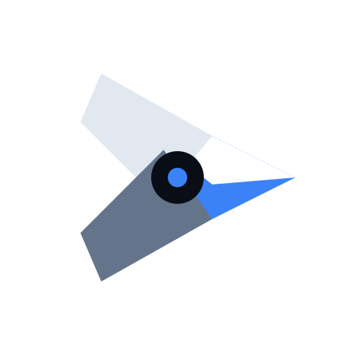

Berdasarkan Concept 1 (The Prismatic Shutter) dengan penghapusan elemen circle di belakangnya
Selected Logo — Iteration 2 (Pure Transparent Vector)

Iteration 2: Pure Transparent Vector (No Outer Box)
Vektor transparan murni tanpa background squircle gelap dan tanpa lingkaran glow belakang. Siap melayang langsung di navbar, cover canvas, atau latar belakang apa pun.